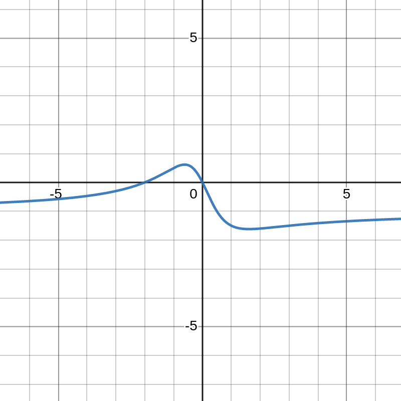
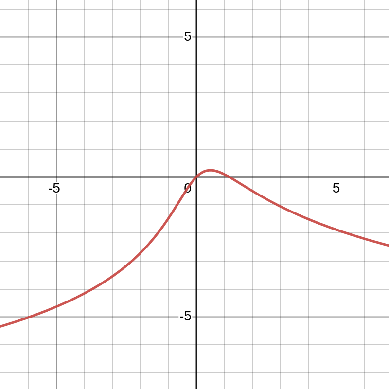
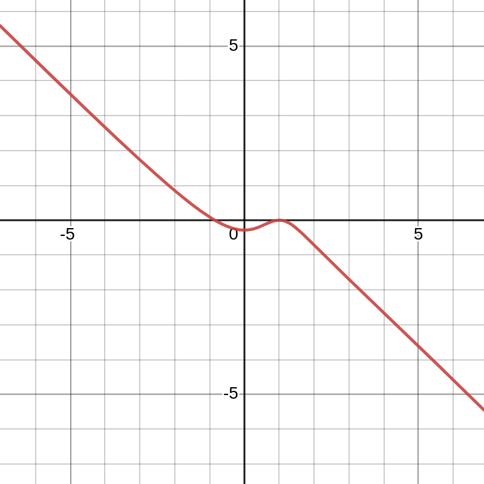
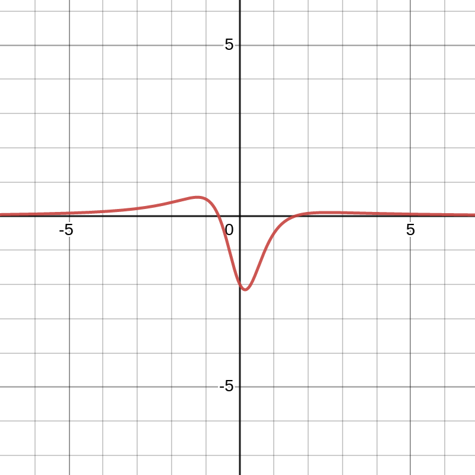
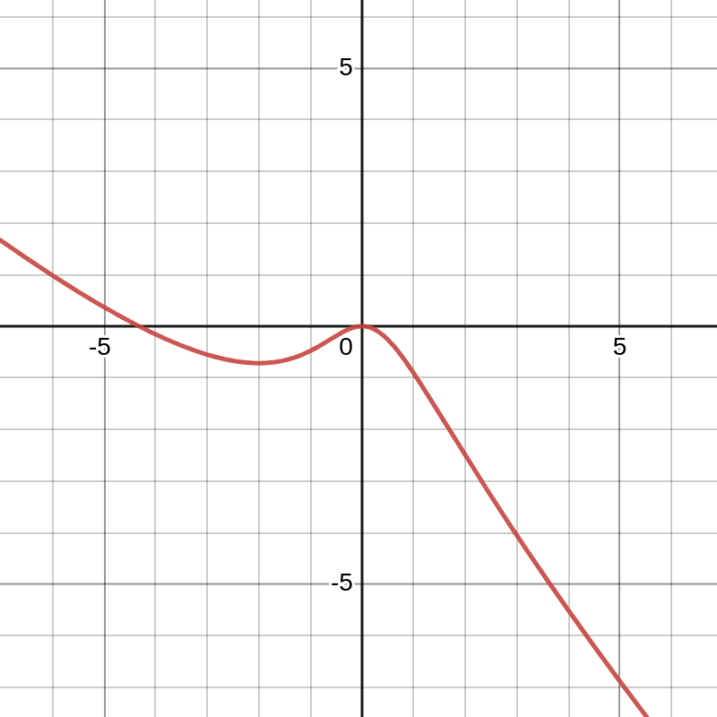
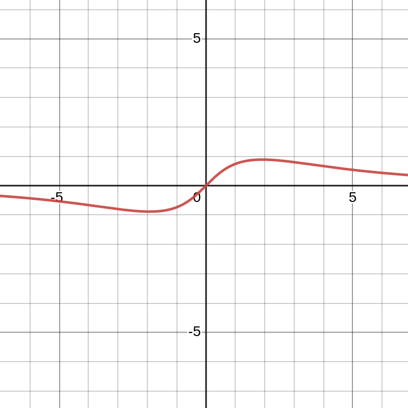
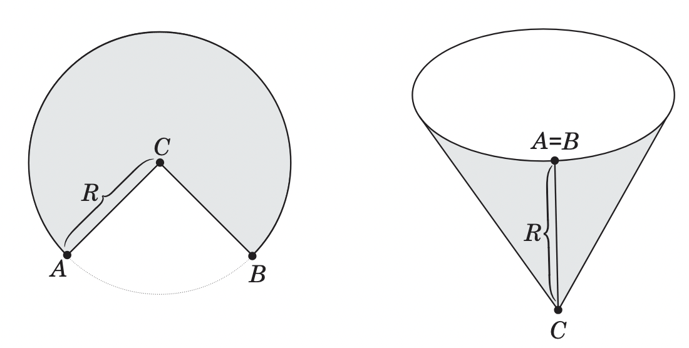
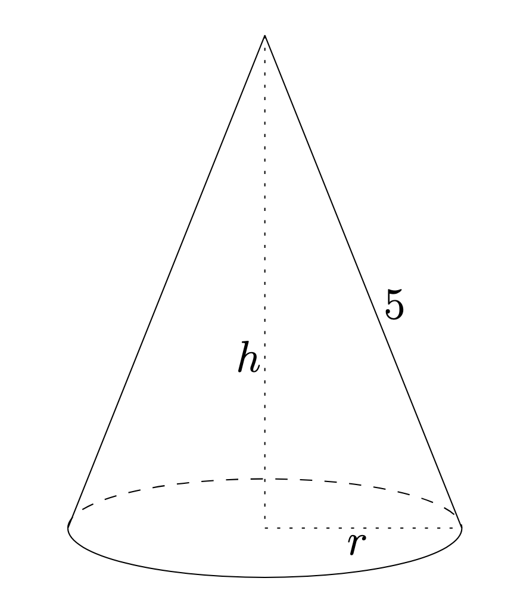
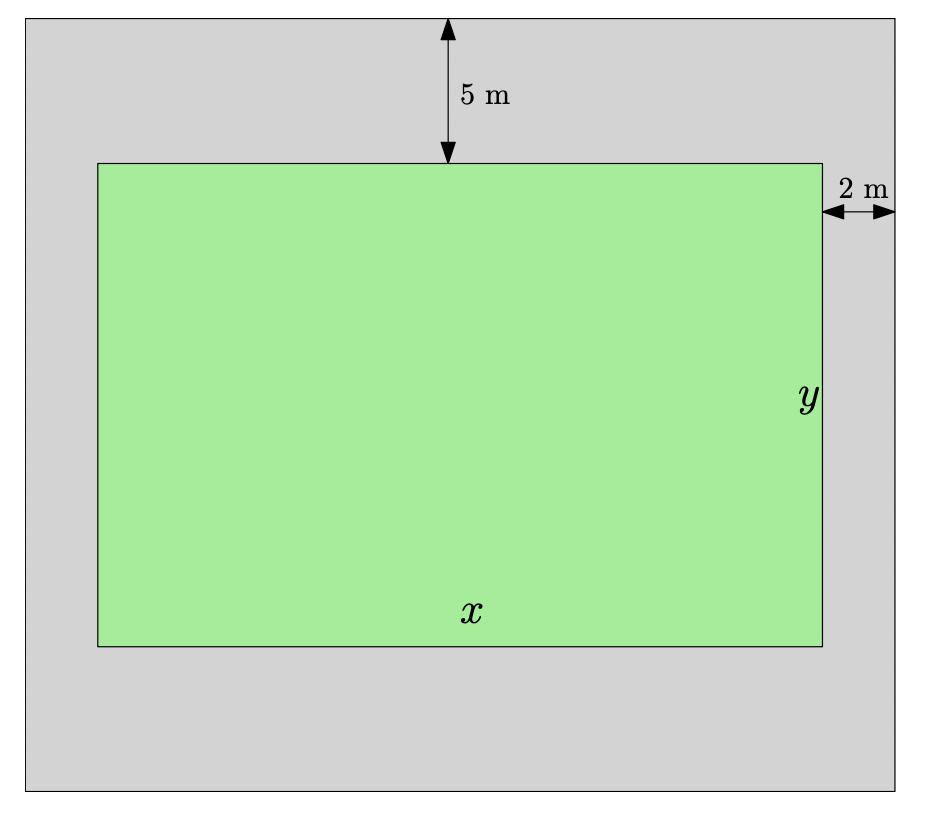

Goal: Comprehensive review of applications of differentiation, including extrema, Mean Value Theorem, L'Hospital's Rule, and Optimization.
1. Absolute Maximum and Minimum
1. You are supposed to know how to find the absolute maximum and absolute minimum of a function \(f\) defined on the closed interval \([a,b]\), by comparing the values on the end points \(f(a), f(b)\) and the values on the critical value(s) \(f(c)\)('s). You should know what the definition of a critical value is.
Example Problem 1.1
Find the absolute maximum/minimum and local maximum/minimum of the function defined by \(f(x) = 3x^4 - 16x^3 + 18x^2\) on the closed interval \([-1,4]\).
Example Problem 1.2
Find the absolute maximum and absolute minimum values of the function \(f\) on the given interval.
- (a) \(f(x) = x^{2/3}\) on \([-1,8]\)
- (b) \(f(x) = xe^{-x}\) on \([-4,6]\)
- (c) \(f(x) = (x^2 - 1)^3\) on \([-1,3]\)
- (d) \(f(t) = 2\cos t + \sin 2t\) on \([0,2\pi]\)
- (e) \(f(x) = \ln(x^2 + x + 1)\) on \([-1,1]\)
- (f) \(f(x) = e^{-x} \cdot \sin x\) on \([0,3\pi/2]\)
Example Problem 1.3
Let \(f(x)\) be the function given by
Find its absolute maximum value and absolute minimum value on the interval \([-\dfrac{\pi}{2}, \dfrac{\pi}{2}]\).
2. 1st and 2nd Derivative Tests
2. You are supposed to be able to use the 1st Derivative Test, as well as the 2nd Derivative Test, to find the local maximum and local minimum of a function.
Example Problem 2.1
The first derivative of a function \(f\) is given by
Find the values of \(x\) for which the function \(f\) takes (a) local maximum, and (b) local minimum.
Example Problem 2.2
(a) Find the critical numbers of the function \(f(x) = x^8(x - 4)^7\).
(b) What does the Second Derivative Test tell you about the behavior of \(f\) at these critical numbers?
(c) What does the First Derivative Test tell you that the Second Derivative test does not?
3. Graphing from its Derivative
Example Problem 3.1
Below is given the graph of \(y=f'(x)\).

Which of the following can be the graph of \(y=f(x)\).





4. Concavity and Inflection Points
4. You are supposed to tell whether the graph of a function is concave up/down, and find its inflection points, by looking at the second derivative of the function.
Example Problem 4.1
Determine how the concavity changes for the function \(f(x) = \dfrac{1}{2}x - \sin(x)\) on the interval \((0, 3\pi)\).
Example Problem 4.2
The second derivative of a function \(f\) is given by
find the \(x\)-coordinates of all the inflection points.
Example Problem 4.3
How many inflection points does the graph of the function \(y = f(x) = x^5 - 5x^4 + 25 x\) have ?
Example Problem 4.4
We have a function whose first derivative is given by the formula \(f'(x) = (x - 1)^2(x + 3)^3\). Find the local extrema and the inflection points of the function.
5. L'Hospital's Rule (\(0/0, \infty/\infty\))
5. You are supposed to know how to compute the limits using L'Hospital's Rule, under the provision that the limits are formally of the form \(\displaystyle \frac{0}{0}, \frac{\pm \infty}{\pm \infty}\).
Example Problem 5.1
(a) \(\lim_{x \rightarrow \infty}\dfrac{\ln(x)}{\sqrt{x}}\) (b) \(\lim_{x \rightarrow 0}\dfrac{1 - \cos x}{3x^2}\)
(c) \(\lim_{x \rightarrow 0}\dfrac{e^{7x} - \cos 2x}{\tan (3x)}\) (d) \(\lim_{x \rightarrow 0}\dfrac{\sin x}{1 - x^2}\)
(e) \(\lim_{x \rightarrow 0}\dfrac{3x - \sin (3x)}{5x - \tan (5x)}\) (f) \(\lim_{x \rightarrow 0}\dfrac{\tan x - x}{x^3}\)
(g) \(\lim_{x \rightarrow 0}\dfrac{\ln\left(\dfrac{\sin x}{x}\right)}{x^2}\) (h) \(\lim_{x \rightarrow 0}\dfrac{\ln \left(\cos(5x)\right)}{x^2}\)
(i) \(\lim_{x \rightarrow \infty} \dfrac{\tan^{-1}(x) - \frac{\pi}{2}}{\frac{1}{x}}\)
6. Indeterminate Forms (\(\pm \infty \times 0, \infty - \infty\))
6. You are suppose to know how to compute the limits of the form \(\pm \infty \times 0, \infty - \infty\).
Example Problem 6.1
- (a) \(\lim_{x \rightarrow 0^+}x \cdot \ln(2x)\) (a*) \(\lim_{x \rightarrow 0^+}x \cdot \ln\left(3 + \dfrac{5}{x}\right)\)
- (b) \(\lim_{x \rightarrow \infty} 2x \cdot \tan\left(\dfrac{1}{3x}\right)\)
- (c) \(\lim_{x\to \left(\frac{\pi}{2}\right)^-}\ \left(2x - \pi\right) \cdot \tan (x)\)
- (d) \(\lim_{x \rightarrow \infty}\left(\sqrt{x^2 - 5x + 7} - x\right)\)
- (e) \(\lim_{x \rightarrow 1}\left(\dfrac{x}{x - 1} - \dfrac{1}{\ln(x)}\right)\)
- (f) \(\lim_{x \rightarrow 4}\left(\dfrac{1}{\sqrt{x} - 2} - \dfrac{4}{x - 4}\right)\)
- (g) \(\lim_{x \rightarrow \infty}x^2 \cdot \tan\left(\dfrac{1}{5x^2 + 2}\right)\) (g*) \(\lim_{x \rightarrow 0}x^2 \cdot \tan\left(\dfrac{1}{5x^2 + 2}\right)\)
7. Indeterminate Powers (\(0^0, \infty^0, 1^{\infty}\))
7. You are supposed to be able to compute the limits \(\displaystyle \lim_{x \rightarrow a}\left[f(x)\right]^{g(x)}\) of the form \(\displaystyle 0^0, \infty^0, 1^{\infty}\).
Example Problem 7.1
- (a) \(\lim_{x \rightarrow \infty}\left(1 + \dfrac{3}{x}\right)^{7x}\)
- (b) \(\lim_{x \rightarrow \infty}\left(\dfrac{x + 3}{x - 2}\right)^{4x+1}\)
- (c) \(\lim_{x \rightarrow 0^+}(1 - 5x)^{1/x}\)
- (d) \(\lim_{x \rightarrow \infty}(e^x + x)^{1/x}\)
- (e) \(\lim_{x \rightarrow \left(\frac{\pi}{2}\right)^-}\left(5\tan x\right)^{\cos x}\)
- (f) \(\lim_{x \rightarrow 0^+}(e^{\frac{6}{x}} - 8x)^{x/2}\)
8. Mean Value Theorem
8. You are supposed to know the statement of the Mean Value Theorem as well as its meaning, and also to know under what conditions you can apply the Mean Value Theorem. You are also supposed to be able to know how to apply the following corollary of the Mean Value Theorem to compute some value which is seemingly difficult to determine otherwise: If \(f'(x) = 0\) for all values of \(x \in (a,b)\), then a continuous function \(f\) on the closed interval \([a,b]\) is actually a constant.
Example Problem 8.1
Consider the function \(f(x) = x^4 - 2x^2 + 7x - 2\) over the interval \([-2,2]\). Does it satisfy the conditions for the Mean Value Theorem to hold? If it does, find the value(s) \(c \in (-2,2)\) such that:
Example Problem 8.2
Consider the function \(y = f(x) = x^{2/3}\) over the interval \([-1,1]\). Does it satisfy the conditions for the Mean Value Theorem to hold? Do we have any value \(c \in (-1,1)\) such that:
Example Problem 8.3
Determine the exact value of:
Example Problem 8.4
Determine the exact value of:
Example Problem 8.5
Determine the exact value of:
Example Problem 8.6
Consider the equation \(f(x) = x^3 + x - 1 = 0\). Determine how many solutions are there for the above equation on the interval \([0,1]\), using the Intermediate Value Theorem and the Mean Value Theorem.
Example Problem 8.7
Consider the function \(y = f(x)\) where \(f(x)\) is a cubic polynomial of the form \(f(x) = ax^3 + bx^2 + cx + d\) with \(a \neq 0\). We computed the 1st derivative of the function to be:
What can you conclude about the number of solutions for the equation \(f(x) = 0\)?
9. Sketching Graphs
9. You are supposed to be able to sketch the graph of a function by computing the 1st derivative (increasing or decreasing) and 2nd derivative (concave up or down), and also by determining the horizontal/vertical asymptotes and \(x\)-intercept (\(y\)-intercept).
Example Problem 9.1
Draw the graph of the following function:
- (a) \(y = f(x) = \dfrac{1}{x^2 - 16}\) | (b) \(y = f(x) = \dfrac{x}{x^2 - 16}\)
- (c) \(y = f(x) = \dfrac{x^2}{x^2 - 16}\) | (d) \(y = f(x) = \dfrac{x^3}{x^2 - 16}\)
- (e) \(y = f(x) = \dfrac{x}{x^2 + 16}\) | (f) \(y = f(x) = \dfrac{x^3}{x^2 + 1}\)
- (g) \(y = f(x) = e^{-x}\sin x\) on \([0,2\pi]\)
- (h) \(y = f(x) = \ln\left(x^2 - 10x + 24\right)\)
10. Linear Approximation
10. You are supposed to understand the idea of the linear approximation of a function \(f(x)\) at \(x = a\) \[f(x) \approx L(x) = f(a) + f'(a)(x - a),\] and apply it to approximate the value of a function at a given point.
Example Problem 10.1
Find the formula for the linear approximation to \(f(x) = \sqrt{x}\) at \(x = a = 1\) and use it to approximate \(\sqrt{1.1}\).
Example Problem 10.2
Find the formula for the linear approximation to \(f(x) = e^x\) at \(x = a = 0\) and use it to approximate \(e^{- 0.05}\).
Example Problem 10.3
Find the estimate of \(\sqrt[3]{8.012}\) using the linear approximation of the function \(f(x) = \sqrt[3]{x}\) at \(x = 8\).
Example Problem 10.4
Find the estimate of \(\sin (46^{\circ})\) using the linear approximation of the function \(f(x) = \sin {x}\) at \(a = \pi/4\).
Note: Remember to convert degrees to radians when working with derivatives of trigonometric functions.
11. Optimization Problems
11. Total of 4 (resp. 3) Optimization Problems on PWL (resp. on PIN) will be given in Exam 3. Of particular importance are: Farmer-Enclosing-Pen Problem, Cylinder/Box Problem, Maximizing or minimizing the area of a figure, Coffee Cup problem, Circular Cone Problem, Walk Way Problem, Crossing-River Problem.
Example Problem 11.1
A farmer has 400 feet of fencing to build a rectangular pen to contain chickens. The pen needs to be in the shape of a rectangle with a straight divider in the middle that separates the pen into two congruent rectangles. What is the maximum possible area inside the pen?

Example Problem 11.2
A farmer plans to make four identical and adjacent rectangular pens against a barn. Each with an area of \(100\text{ m}^2\), what are the dimensions of each pen that minimize the amount of fence that must be used? (Consider the sides as the lengths as \(x\) and \(y\) with \(y\) being the side parallel to the barn).
Example Problem 11.3
A rectangular box has to be made with the width being twice as long as the length (with a bottom but WITHOUT a top). If the surface area of the box is \(400\text{ cm}^2\), what is the height of the box with the largest volume?
Example Problem 11.4
A cylindrical barrel is to be made that has a volume of \(6\pi\text{ ft}^3\). The material for the top and bottom cost 4 dollars/ft\(^2\) and the material for the side costs 6 dollars/ft\(^2\). Find the radius of the barrel that will minimize the cost of production.
Example Problem 11.5
What is the largest area of an isosceles triangle inscribed in a circle of radius 1?
Example Problem 11.6
What is the largest area of the rectangle inscribed in an ellipse:
Example Problem 11.7
Find the equation of a line passing through the point \((3,2)\), which cuts off the least amount of area from the first quadrant.
Example Problem 11.8
Find the area of the largest rectangle that can be inscribed in a right triangle with legs of lengths \(3\text{ cm}\) and \(8\text{ cm}\) if two sides of the rectangle lie along the legs.
Example Problem 11.9
A cone-shaped drinking cup is made from a circular piece of paper of fixed radius \(R\) by cutting out a sector and joining the edges \(CA\) and \(CB\). Find the maximum capacity of such a cup.

Example Problem 11.10
The slant height of a right circular cone is the distance from the edge of the base of the cone to the vertex of the cone. What is the maximum volume of a right circular cone with slant height \(5\text{ cm}\)?

Example Problem 11.11
The U.S. Postal Services will accept a box for domestic shipment only if the sum of its length and girth (distance around) does not exceed \(108\text{ in}\). What dimensions will give a box with a square end the largest possible volume?
Example Problem 11.12
Suppose a rectangular area is to be surrounded by a concrete walkway that is 2 meters wide on the East and West and 5 meters wide on the North and South. If the area inside the walkway is to be \(100\text{ square meters}\), what should the interior width of the enclosed area be (labeled \(x\)) in order to minimize the amount of concrete used.

Example Problem 11.13
Liz is standing on the bank of a \(3\text{ km}\) wide river. An ice cream shop is located on the opposite bank \(10\text{ km}\) down the river from the point right across Liz. She swims at \(2\text{ km/hour}\) and jogs at \(3\text{ km/hour}\). Find the point where Liz should reach by swimming to minimize her total time.
Example Problem 11.14
Matt is building an open top wooden box with a square base. The cost of wood is 2 dollars per ft\(^2\) and the cost of the carpet for the bottom is 1 dollar per ft\(^2\). Rupert requires \(48\text{ ft}^3\) for the box. What is the minimum total cost?